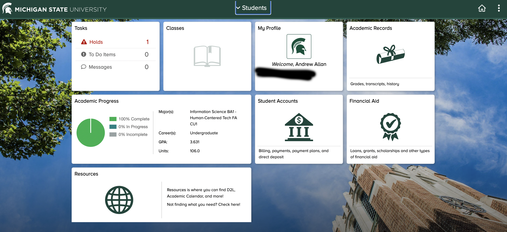

#9 Critiquing the Student Information System (SIS)
Academic Progress
The Academic Progress menu effectively shows where you
are at in your academic career. It shows all the requirements
to graduate and highlights the courses you have and still
need to complete.The features included make the overall
student experince better which should be the goal of a
student website.
Advisor Tab
The advisor tab is very difficult to find requiring students
to navigate through several different menus just to get
help from an advisor. I think this tab should be moved to
the main menu where students can utilize this essential
tool more.
Registering for Classes
- Scheduling
- Shopping Cart
Scheduling can sometimes be difficult for classes when
there are collisions because there is not a functional
way to see the full academic schedule unless if you
draw it out on a piece of paper yourself. These
collisions will require a student to continuously add and
remove courses until they have a schedule that works for
them and costs the student a lot more time as a result.
When adding courses to your schedule, they can be added
to what is known as the shopping cart. This menu is the
antithesis of what being a student website is. The
shopping cart sounds like something that would be
found on a clothing website, not a student one. In
other words, the website need to be designed and
themed more towards students.